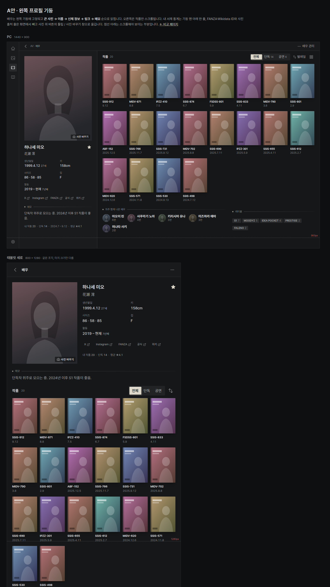
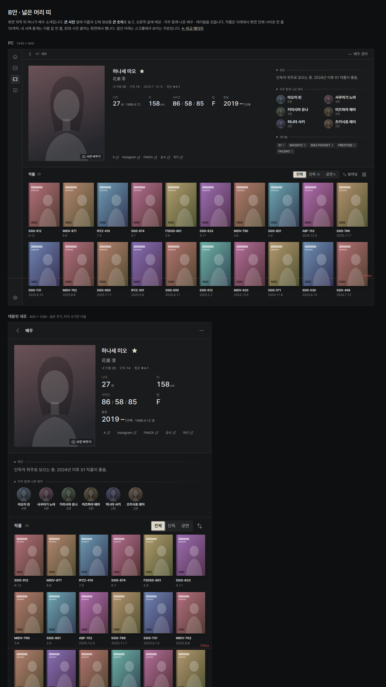

두 안 모두 공통으로: 사진을 크게(지금의 약 3배), 이름·일본어 이름·즐겨찾기 별을 바로 옆에, 신체 정보(나이·키·사이즈·컵·활동)는 짧게, 링크는 조용한 작은 버튼으로. 내 작품 수·발매 기간·별점 평균은 한 줄로 줄이고, FANZA/Wikidata ID와 사진 출처 줄은 화면에서 뺍니다(출처는 사진 바꾸기 버튼 툴팁과 창 안으로). 작품 케이스는 작게(PC 한 줄 8~10개, 태블릿 6개), 역할(전체/단독/공연)과 정렬은 그대로. 자주 함께 나온 배우는 작은 동그란 얼굴, 레이블은 작은 배지.

